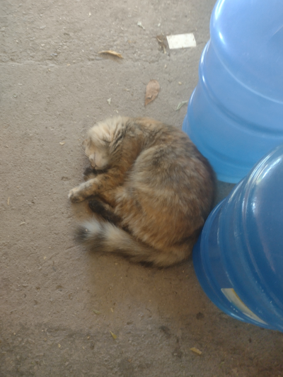
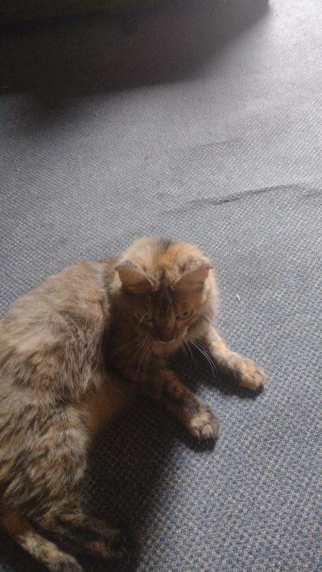
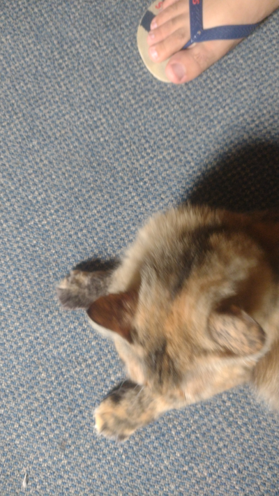
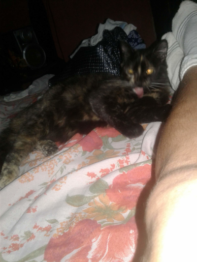
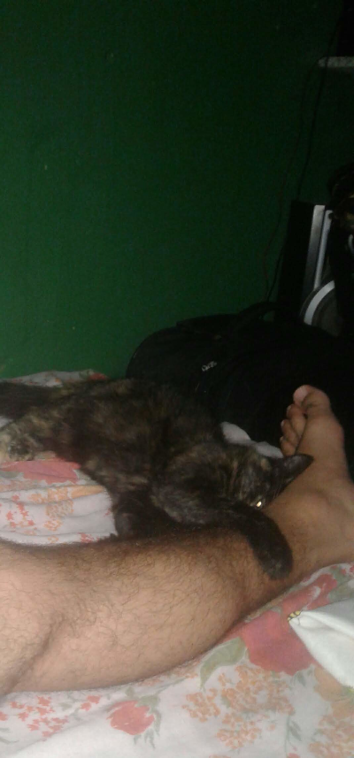
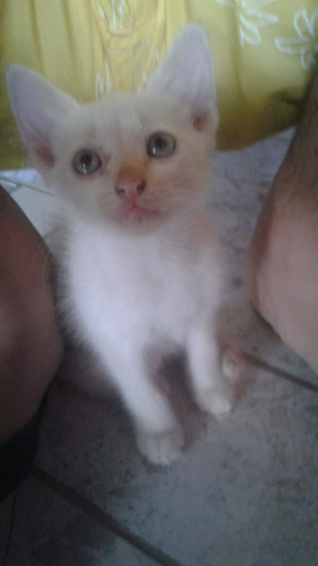
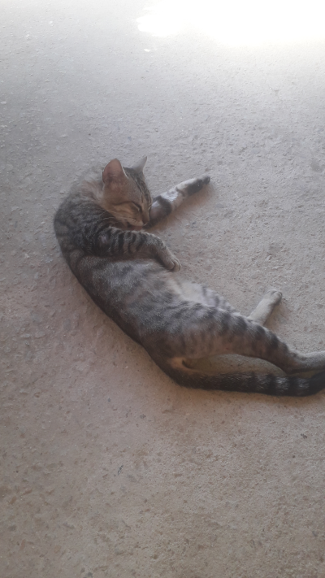
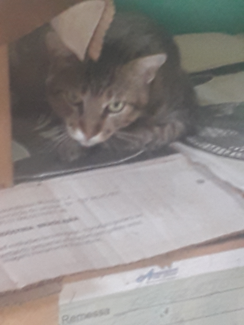
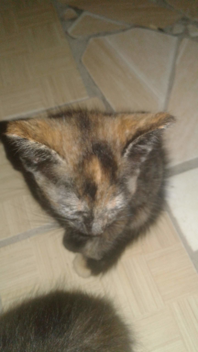

Seja bem vindo ao meu primeiro site!
Este artigo foi criado para declarar tudo o que sinto por meus bichanos. O amor que eu sinto pelas minhas gatinhas e pelos meus gatinhos.
Aqui vou mostrar várias fotos que tenho guardadas em meus dispositivos que foram capturadas por anos.
Também contarei a história de alguns animais (gatos geralmente) que eu perdi infelizmente para doenças repentinas, envenenamentos e que até hoje me deixam triste só de lembrar, mas enfim, temos que sempre lembrar das melhores partes com felicidade e gratidão! Por eles terem feito parte da nossa vida, por terem nos cativado e entrertido com seus jeitos dengosos e manhosos.
Não tem uma ordem cronológica das fotos, pois não sei a data correta de todas as fotografias.
Esta é a Cindy!


Esta gatinha é o amor da minha vida, ela tem 6 aninhos. Filha de um antigo gato do meu pai que já se foi e de uma gata também falecida. Esta gata seria criada pelo meu pai, mas eu decidi ficar com ela e minha esposa também gostou dela. Abaixo vou mostrar a irmãzinha dela que já não está mais aqui mas é bom lembrar.
Nossa amada Morgana linda!!

A história desta gata pode ser contada com muito amor, mas seu fim inesperado ainda nos deixa machucados, pois nos deixou sem aviso prévio, e de causas até hoje não esclarecidas. Era uma gata muito linda, meiga, companheira. Queria muito que ela ainda estivesse aqui, mas é assim mesmo, Deus escreve certo por linhas tortas.
Ah, este aqui é o Sol!
Como iria esquecer deste lindo gato branquinho feito neve. Esse tem muita história boa pra contar, um gato extremamente engraçado e também muito amável. Hoje ele vive sendo cuidado por um conhecido. É uma pena que não esteja mais junto da gente, não poderiámos pegá-lo de volta, mas eu sei que ele deve lembrar do nosso cheiro. Eu gostava muito dele.
Este aqui é o Brutinho!
Este gato era tão carinhoso, tão meigo, tão bonzinho, até parece ironia chama-lo assim, mas a verdade é que, quando ele era muito novinho, era um gato muito raivoso, por isso demos este nome pra ele, mas depois seu jeitinho brutinho se transformou em um gatinho tão carinhoso, que parecia até o jeito de um cachorrinho. Ele era bonzinho. Infelizmente ele também teve um fim trágico. Foi comer algo envenenado e acabou falecendo horas depois. Eu e minha esposa não conseguimos acha-lo logo e só fomos encontra-lo dias depois e essa parte eu não quero falar. Mas ainda sinto sua falta também.
Este se chamava Lyon!
Este gato se chamava Lyon, ele pode parecer tão desconfiado nesta foto, mas não gostava muito de conversa, mas tinha horas que ele também era um gato carinhoso e meigo. Ele também nos deixou, saiu de casa e nunca mais voltou. Eu e minha esposa achamos que ele saiu e brigou com algum outro animal e acabou tendo um triste fim. Também sentimos sua falta... demais!
Por fim esta aqui é a Morgana também!
Esta gatinha Também se chamava Morgana, nós amamos muito, de todos os gatos esta gata era a mais carinhosa, meiga e dócil, tivemos que dar pra uma pessoa que queria muito um gatinho, então esta pessoa a adotou. Nem preciso dizer que sinto tanto sua falta.
Esta foi a história de alguns gatos meus, eu sei que contei muita história triste de animais, mas queria deixar toda a esta mensagem como uma homenagem a esses seres divinos que Deus deixou na Terra para nos fazer feliz tirar-nos do tédio. Obrigado se você leu todo este artigo. Nunca maltrate animais, Cuide deles, jamais os abandone, se não quer mais, der para uma pessoa que goste de verdade e que vai dar amor e proporcionar uma vida prazerosa a estes anjos!!